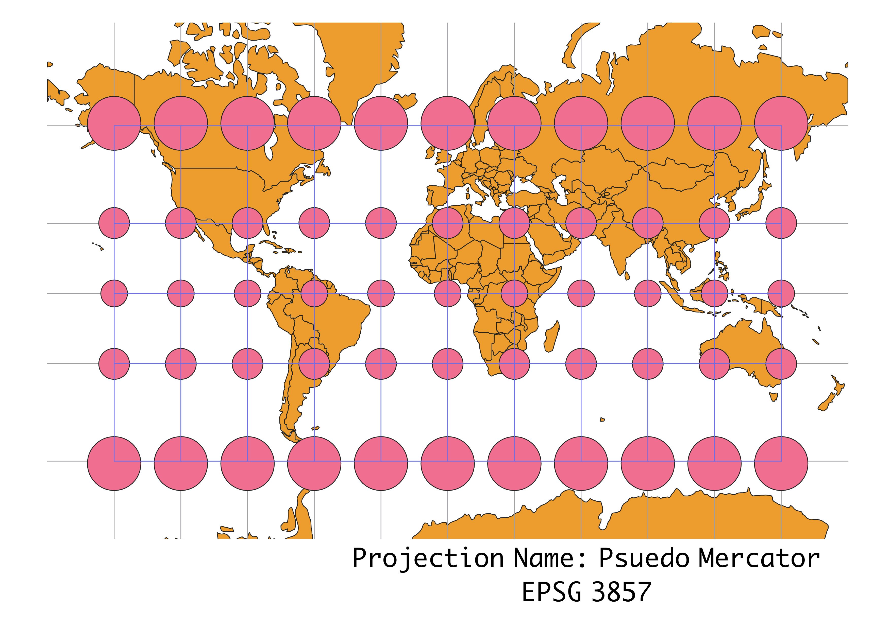

In this project I learned how to display images in different projections
Projection Process using QGIS
Starting from the Globe Builder plug in, I created a world map layer. Then I added the Indicatrix mapper, with layers of graticule and caps, placing those layers above the map. Clicking the Project Coordinate Reference System (CRS) from the bottom right corner, I toggled between the different CRS available.
WGS84 Projection
Some observations

Aitoff Projection
Some observations

WGS84 Pseudo Mercato Projection
Some observations

Sphere Winkel Projection
Some observations

World Cylindrical Equal Area Projection
Some observations

World Equidistant Conic Projection
Some observations

North Pole Azimuthal Equidistant Projection
Some observations

Sphere Van der Grinten Projection
Some observations

World Bonne Projection
Some observations

South Pole Orthographic Projection
Some observations

Data used for this project
Download Natrual Earth 1:10m Cultural Vector